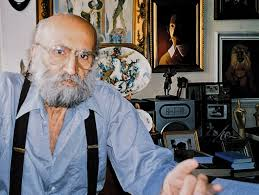

Աղասի Այվազյան
Կենսագրություն
Աղասի Այվազյանը ծնվել է 1925 թվականի սեպտեմբերի 7-ին Աբասթուման ավանում։ Նա հայ արվեստի բացառիկ ներկայացուցիչներից էր՝ միաժամանակ արձակագիր, դրամատուրգ, սցենարիստ, ռեժիսոր, խմբագիր և գեղանկարիչ։ Սովորել է Թբիլիսիի գեղարվեստի ակադեմիայում և պետական համալսարանում, ինչպես նաև Երևանի մի շարք ուսումնական հաստատություններում։
Նրա ստեղծագործական ուղին անցել է արվեստի մի քանի ճյուղերով։ Արձակ գրող լինելուց բացի, նա հայտնի էր որպես հաջողակ սցենարիստ ու ռեժիսոր։ Նրա սցենարով 1967-ին նկարահանվել է «Եռանկյունի» ֆիլմը, որը արժանացել է պետական մրցանակի։ Նա նաև հեղինակել է «Հայրիկ», «Լիրիկական երթ» և «Վառած լապտեր» ֆիլմերի սցենարները՝ հիմնված սեփական պատմվածքների վրա։
Այվազյանը թատերական աշխարհում նույնպես ներկայանում էր նորարարական մոտեցմամբ։ ԱՄՆ-ում բեմադրվել են նրա պիեսները՝ «Դեկորները» և «Ժանգառքը»։ Նրա ստեղծագործություններից ամենահայտնիներից է «Չարենցի Ուղղիչ տունը» կենսագրական դրաման, որը վերհանում է Եղիշե Չարենցի կյանքի կարևոր փուլերից մեկը։
Նրա գրքերը լույս են տեսել ոչ միայն հայերեն, այլև ռուսերեն, լիտվերեն և բուլղարերեն։ Աղասի Այվազյանը իր բազմակողմանի տաղանդով մնացուն ժառանգություն է թողել հայ գրականության, թատրոնի և կինոյի պատմության մեջ։ Մահացել է 2007 թվականի նոյեմբերի 21-ին Երևանում։